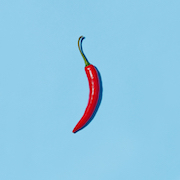
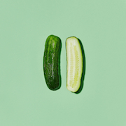

Kiwi learning to be a nerd in Shanghai
Carrot SoupCarrot soup is a soup prepared with carrot as a primary ingredient. It can be prepared as a cream- or broth-style soup. Additional vegetables, root vegetables and various other ingredients can be used in its preparation. It may be served hot or cold, and several recipes exist. |
|
|  |
Chilli Con CarneChili con carne, commonly known in American English as simply "chili", is a spicy stew containing chili peppers, meat, and often tomatoes and beans. Other seasonings may include garlic, onions, and cumin. |
|  |
Pickled CucumberA pickled cucumber is a cucumber that has been pickled in a brine, vinegar, or other solution and left to ferment for a period of time, by either immersing the cucumbers in an acidic solution or through souring by lacto-fermentation. |